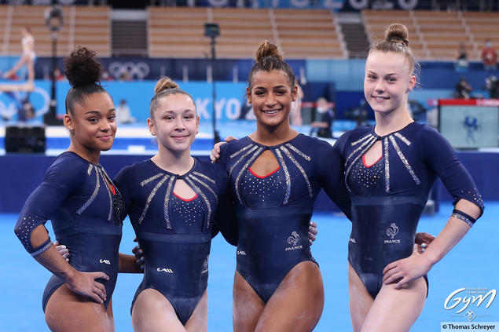
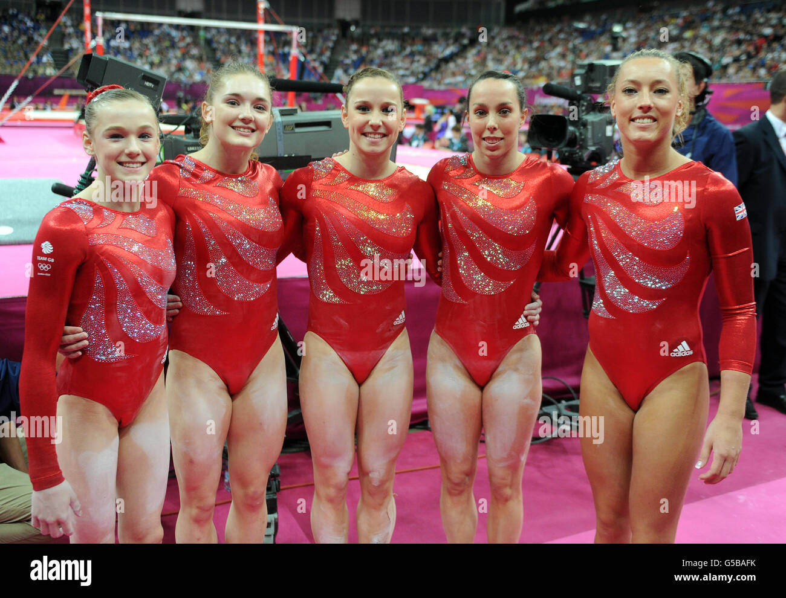

Les plus grandes scènes de la gymnastique mondiale
La gymnastique est l'une des disciplines phares des Jeux Olympiques depuis leur création en 1896. Les meilleurs athlètes du monde s'affrontent dans des épreuves au sol, aux agrès et en rythmique, devant des millions de téléspectateurs.
Chaque édition génère des moments inoubliables — des notes parfaites aux figures jamais réalisées — qui entrent dans la légende du sport olympique.


Organisés chaque année par la Fédération Internationale de Gymnastique (FIG), les Championnats du Monde réunissent l'élite mondiale dans toutes les disciplines — artistique, rythmique, acrobatique et trampoline.
C'est aussi lors de ces championnats que les athlètes qualifient leur pays pour les Jeux Olympiques suivants, rendant chaque compétition doublement stratégique.
Série de compétitions annuelles organisées dans plusieurs villes hôtes, permettant aux gymnastes de cumuler des points sur le circuit mondial.
Compétition continentale regroupant les meilleures nations européennes, organisée chaque année en alternance entre différents pays membres de l'UEG.
L'un des tournois par invitation les plus prestigieux au monde, réunissant chaque année à New York les champions olympiques et mondiaux en titre.